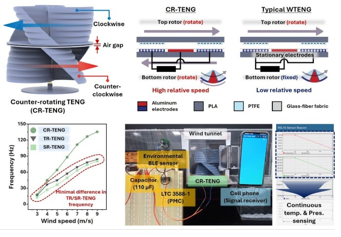
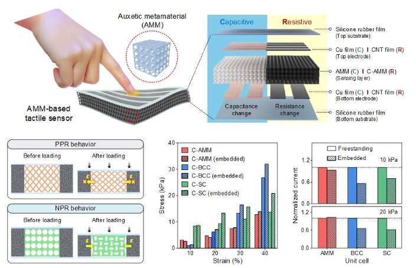
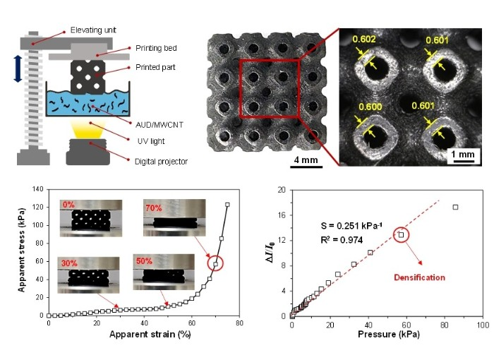
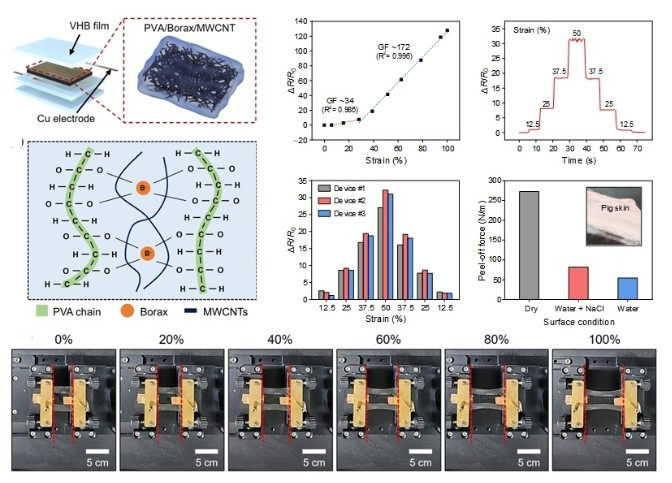
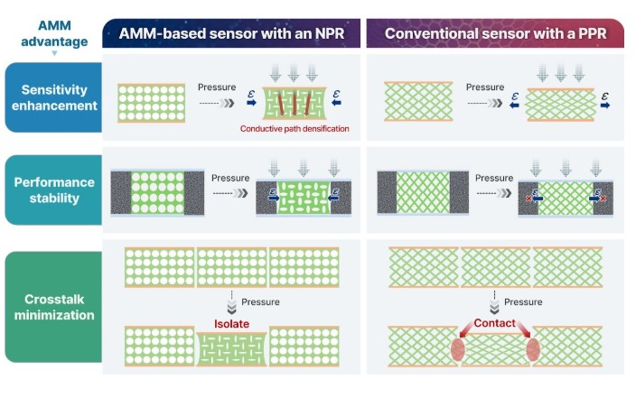
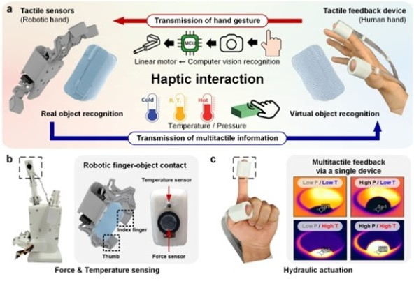
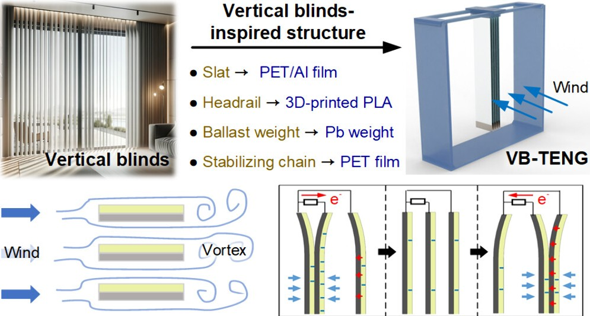
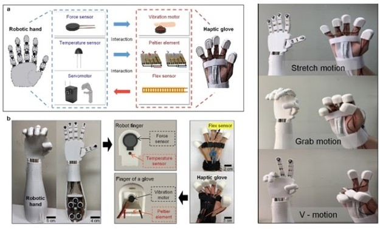
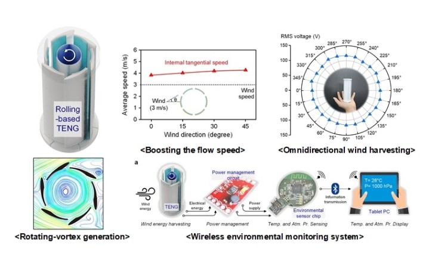

Dual-Shaft Counter-Rotating Triboelectric Nanogenerator for Efficient Wind Energy Harvesting
Nano Energy,148, 111643 (2026)

Advanced Functional Materials,35 (47), e09704 (2025)

Composite Structures,372, 119614 (2025)

Micro and Nano Systems Letters,13, 20 (2025)

Auxetic Mechanical Metamaterials for Resistive Tactile Sensors: A Review
Advances in Physics: X,10 (1), 2572830 (2025)

Advanced Intelligent Systems,7 (5), 2400579 (2025)

ACS Applied Electronic Materials, 6 (4), 2534-2543 (2024)

Haptic Interface with Multimodal Tactile Sensing and Feedback for Human-Robot Interaction
Micro and Nano Systems Letters, 12, 9 (2024)

Nano Energy, 119, 109071 (2024)